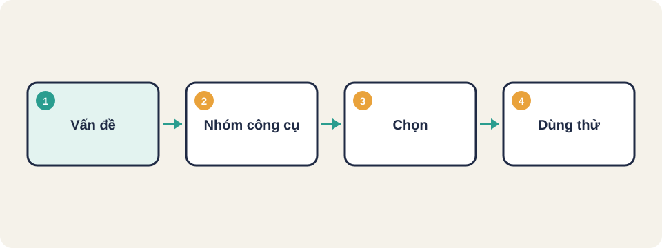
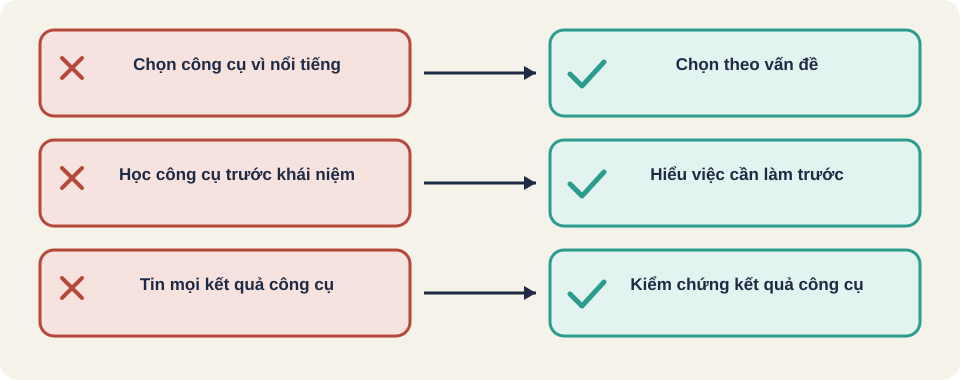

Hình vẽ gốc, dùng để minh họa thứ tự các bước chính của bài.
Công cụ theo mục đích: quản lý ca, theo dõi lỗi, tự động hóa, hiệu năng, bảo mật. Học khái niệm trước khi học công cụ.

Hình vẽ gốc, dùng để minh họa thứ tự các bước chính của bài.
Mark Winteringham đưa ra nguyên tắc "problem first, tools second". Trước khi học một công cụ, hãy hỏi vì sao cần nó. Dùng sai công cụ có thể làm chậm việc hoặc cho thông tin sai.
Nguồn: Mark Winteringham, "What Tools Should I Learn?" (Ministry of Testing) [đã đọc].
Theo bài này, công cụ tư duy (heuristic) là quan trọng nhất, ví dụ Rule of Thumb, CRUD, Goldilocks. Chúng không cần cài đặt, nhưng giúp chọn ca kiểm thử. Nên học tư duy trước, rồi mới học công cụ phần mềm.
Nguồn: [đã đọc].
| Nhóm | Việc giải quyết | Ví dụ trong bài |
|---|---|---|
| Tư duy (heuristic) | Chọn ý tưởng kiểm thử | Rule of Thumb, CRUD, Goldilocks |
| Ghi chép và báo cáo | Lập sơ đồ, ghi lại lỗi | XMind, MindMup, Draw.io, Rapid Reporter |
| Tạo dữ liệu test | Sinh dữ liệu đầu vào, gửi yêu cầu HTTP | SQL, Big List of Naughty Strings, Postman, curl, JMeter |
| Thu thập thông tin | Xem gói tin và nhật ký hệ thống | Burp Suite, Fiddler, Charles, grep, tail, Developer Tools |
| Tự động hóa và lập trình | Viết script, hiểu code để review rủi ro | Học lập trình, hoặc làm việc với developer |
Nguồn: [đã đọc]. Tên công cụ lấy từ bài gốc, chưa kiểm tra còn được bảo trì hay không.
Vấn đề: API đặt hàng trả về sai khi số lượng âm
Cần: gửi yêu cầu với nhiều giá trị đầu vào, xem phản hồi
→ Nhóm: tạo dữ liệu test + HTTP client
→ Công cụ: Postman hoặc curl, kèm danh sách giá trị biên
Không cần: công cụ tải, vì chưa có vấn đề hiệu năngThứ tự này là gợi ý của người soạn bài, [kiến thức chung]. Bài nguồn không đưa lộ trình cụ thể.
Đội bạn phải kiểm một trang web có form đăng ký và cần biết gửi dữ liệu xấu có làm server lỗi không. Chọn nhóm công cụ nào, và vì sao không cần công cụ tải?
Nguồn: FreeLearningResourcesForSoftwareTesters, mục "Testing Tools and Techniques".
Thuật ngữ trong slide này: Công cụ quản lý ca (test management): Phần mềm lưu ca kiểm thử, kết quả, tiến độ và liên kết với yêu cầu.

Công cụ quản lý ca (test management)
Theo dõi lỗi (bug tracker)
Proxy (công cụ bắt gói tin)